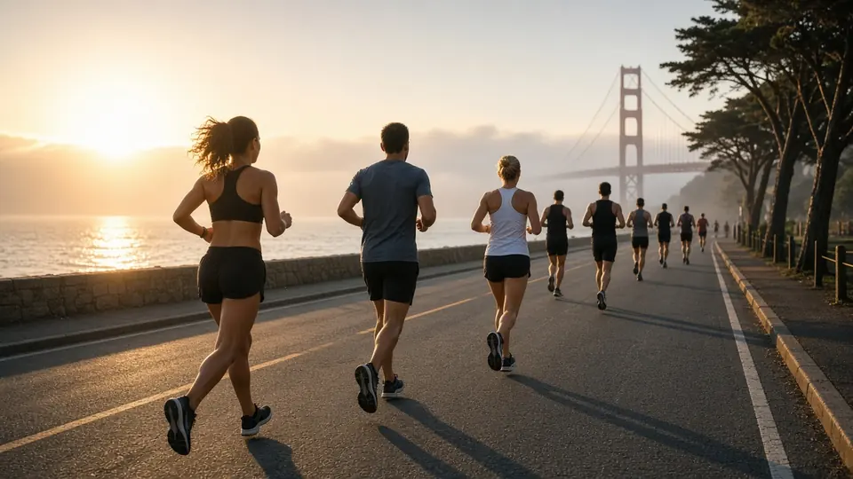
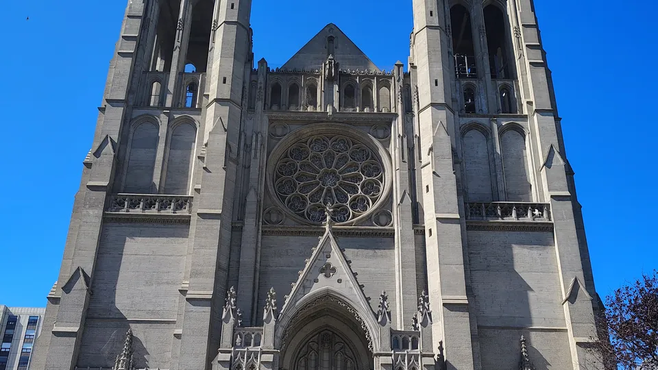

Urban Concierge - Bay Area
Friday Nov 27 – Sunday Nov 29, 2026 · Snapshot compiled Fri Nov 27, 2026, 2:20 pm PT (Urban Concierge - Bay Area)
- NWS: Coastal Flood Advisory until Sun Nov 29 5 pm.
- NWS: Beach Hazards Statement until Sat Nov 28 7 am.
- SFMTA: Natale North Beach Christmas Nov 27-29 canceled for weather (no Powell St closure or 39 Coit reroute that weekend).
- SFMTA: weather-impact page ran through Thu Nov 26; check sfmta.com/weather for cable car and F Market status.
- BART: Powell St. 4th and Market entrance closed to Dec 18.
What's on

Fri Nov 27, early show 6:30 pm (doors 5:15), late show 9 pm (doors 8:30)
Blue Moon Marquee Quartet
Biscuits and Blues, 401 Mason St.
Details →
Fri Nov 27, doors 7 pm, show 8 pm
Emma Ruth Rundle with Cinder Well
Great American Music Hall, 859 O'Farrell St.
Details →
Fri Nov 27, 9:30 am–5:30 pm
Decorate the World Tree of Hope
Grace Cathedral, 1100 California St, with Rainbow World Fund.
Details →Sat Nov 28, early show 6:30 pm (doors 5:15), late show 9 pm (doors 8:30)
Kim Nalley
Biscuits and Blues, 401 Mason St.
Details →Sat Nov 28, doors 7 pm, show 8 pm
Zepparella, the Led Zeppelin Powerhouse
Great American Music Hall, 859 O'Farrell St.
Details →
More in this brief
Where to eat

No Yelp ratings. Descriptions and hours from the restaurants' own pages. The Michelin Guide pages did not load this run, so no Michelin claims are made. This run rotates in Foreign Cinema brunch and drops Rich Table (holiday hours not found).
Foreign Cinema, Mission (2534 Mission St). Californian-Mediterranean since 1999, with film screenings. Dinner Fri–Sat 5–10 pm, Sun 5–9 pm; brunch Sat–Sun 10:30 am–2 pm. https://foreigncinema.com/
Nopa, Divisadero (560 Divisadero St). Organic wood-fired cuisine. Fri–Sat 5–11 pm, Sun 5–9:30 pm. https://www.nopasf.com/
Kin Khao, Union Square (55 Cyril Magnin St). Thai. Lunch daily 11:30 am–2 pm; dinner Fri–Sat 5:30–10 pm, Sun 5:30–9 pm. https://www.kinkhao.com/
Biscuits and Blues, Union Square (401 Mason St). Dinner, drinks and live music in a 100-seat room; see both shows above. https://www.biscuitsandblues.com/
Getting around

Waymo: get $10 off your first ride with code JOHN7RDF (referral link). Referral link: Urban Concierge may earn a ride credit.
Muni and cable cars (SFMTA, read Fri 2:20 pm): The "November Weather Impacts" page covers Nov 23–27 (hours subject to change); earlier it listed bus shuttles for all cable car lines and the F Market & Wharves only through Thu Nov 26 and does not state Friday status. SFMTA's weather page says shuttles may replace cable cars again in storms, so check sfmta.com/weather before riding, especially Sunday. Natale North Beach Christmas (Powell St. closure, 39 Coit reroute) is canceled for Nov 27–29. https://www.sfmta.com/travel-updates · https://www.sfmta.com/weather
Fares (SFMTA): adult single $2.85 via Clipper/MuniMobile/card ($3.00 cash), 120 minutes of travel; day pass $5.70. Select fares rise Jan 4, 2027; single-ride passes left MuniMobile Sept 1, 2026. https://www.sfmta.com/getting-around/muni/fares
BART (checked Fri 2:20 pm; advisories page lists no live delays; BART ran a Sunday schedule for Thanksgiving):
- Powell St. entrance at 4th and Market closed Nov 16 – Dec 18.
- Planned: Yellow Line late-night single-tracking in Contra Costa Nov 30 and Dec 3–5; OAK-line reduced service Dec 3, 5–6 am; Transbay Tube single-tracking Sun Dec 6.
- 30-minute delays some Sun–Thu nights from 9 pm between Millbrae and SFO.
https://www.bart.gov/schedules/advisories
Bikes and scooters: Bay Wheels (Lyft pricing page): single ride $1 unlock, then classic $0.19/min and e-bike $0.49/min; day pass $15/day (30 min free on classic, then $0.19/min); monthly $29. No scooter service was checked. https://www.lyft.com/bikes/bay-wheels/pricing
SFO: The airport's ground transportation guide covers BART, taxis, Lyft/Uber/Wingz, autonomous rides, rental cars (central Rental Car Center, reached by AirTrain) and hotel shuttles. Pickup details for rideshare were not re-read; check the page. BART service between Millbrae and SFO may see 30-minute delays on some Sun–Thu nights from 9 pm. https://www.flysfo.com/passengers/ground-transportation
Where to stay

Union Square for most hotels and transit (Biscuits and Blues is nearby); Nob Hill for Grace Cathedral; Fisherman's Wharf for Ghirardelli Square (check cable car and F line status). Choose a hotel near BART/Muni lines. https://www.sftravel.com/neighborhoods
Assumptions and refresh
- Public data only. Re-read Fri Nov 27, 2026, ~2:20 pm PT: NWS forecast and alerts; SFMTA travel updates and weather pages; BART advisories; SF Zoo; Biscuits and Blues (Kim Nalley); Great American Music Hall; Caltrans District 4 page. Carried over from the 6:20 am run, not re-read: Ghirardelli Square, Grace Cathedral, Biscuits and Blues Blue Moon page, Caltrans Bay Bridge and Sixth St notices, fares, Bay Wheels, restaurant pages, SFO subpages. Nobody was contacted and nothing was signed up for.
- Window is Fri Nov 27 through Sun Nov 29. Times are Pacific standard time.
- This is a snapshot. Urban Concierge - Bay Area refreshes it every 8 hours (6 am, 2 pm, 10 pm PT).
Not verified
- Yelp ratings; reservations; Michelin status (guide pages did not load).
- Ticket prices for Santa Lights the Square and Grace Cathedral's tree event (not listed).
- 511 live incidents (not read); Caltrans notices read from the District 4 site only.
- Cable car and F Market status for Fri–Sun (SFMTA page covers only through Thu).
- Scooter operators and SFO rideshare/rental details.
- Union Square tree lighting and ice rink, Macy's SPCA windows, Thrive City tree lighting: no official page confirmed, so not listed.
- SF Symphony and Envelop SF listings (not read).
- ZooLights Fri/Sat/Sun subject to weather cancellation; Sunday especially at risk.
What changed since the last brief
What changed since last brief (6:20 am): Events unchanged. Weather: NWS now has Sat night rain at 60% (was 70%) and Sunday gusts to 29 mph (was 31); Sunday still 100% rain, 0.25–0.5 in. Coastal Flood Advisory still runs to Sun 5 pm; Beach Hazards Statement to Sat 7 am. Fri afternoon: 63°F downtown. Santa Lights the Square (4:45 pm) is the next event today.